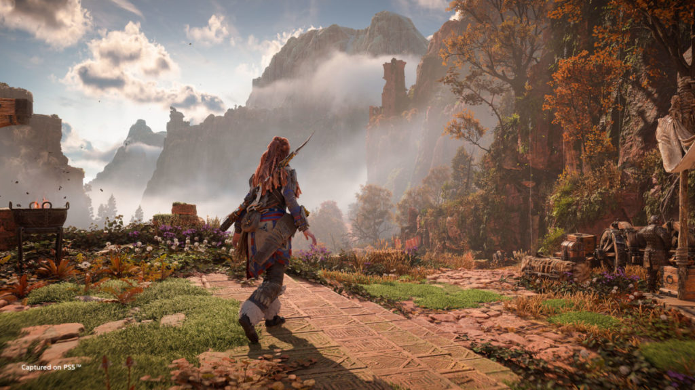
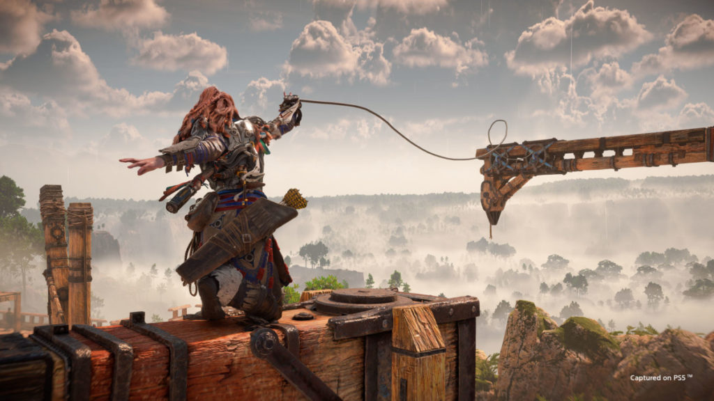
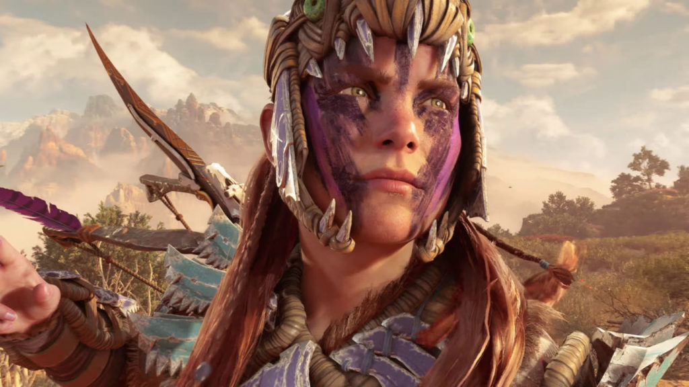
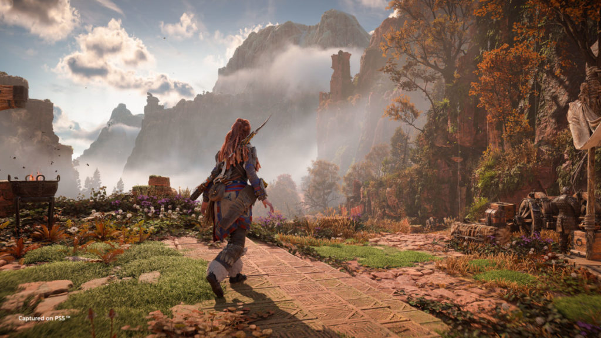
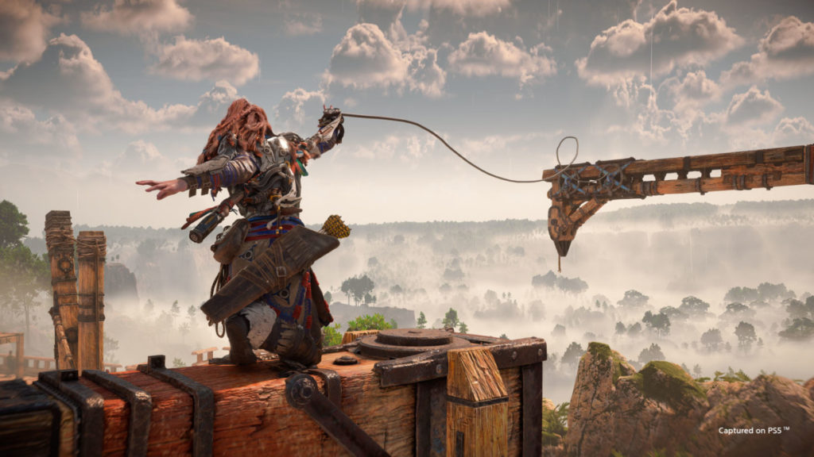
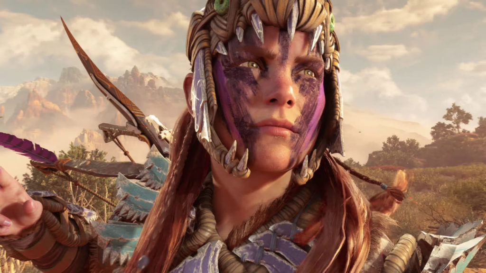

Antes de desbravar o Oeste Proibido, reveja a história épica de Aloy, a caçadora de máquinas, em Horizon Zero Dawn. Ela se passa em um mundo pós-apocalíptico onde a natureza retomou as ruínas do Velho Mundo e máquinas colossais dominam os ermos verdejantes.
O jogo se passa em um mundo pós-apocalíptico em que as máquinas dominaram tudo, fazendo com que os humanos voltassem a viver em tribos. Nesse universo, somos apresentados a Aloy, uma caçadora com um passado misterioso e desconhecido por ela mesma.
Uma experiência sensacional. A conclusão é de que Horizon Forbidden West é o melhor jogo para PS5 desde seu lançamento. O game consegue ser completo e oferece ao jogador um grande sentimento de satisfação. A boa gameplay e a beleza do mundo fazem com que o game se mantenha ótimo do início ao fim.
 




